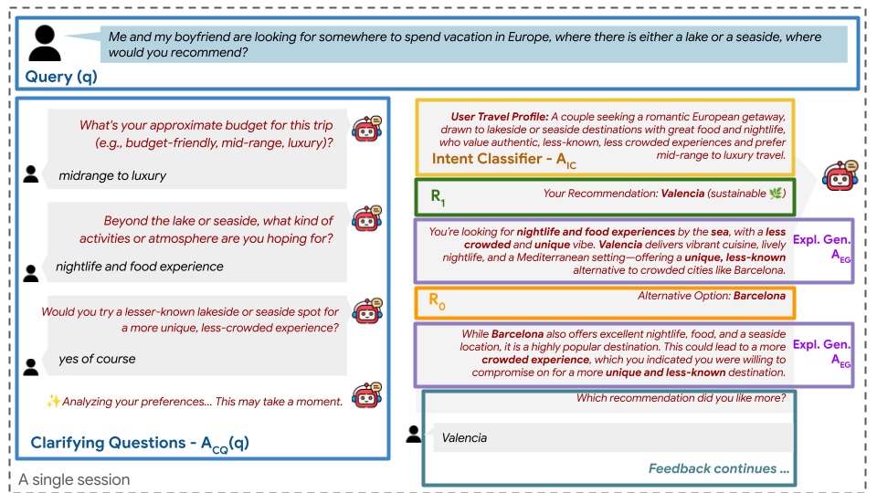
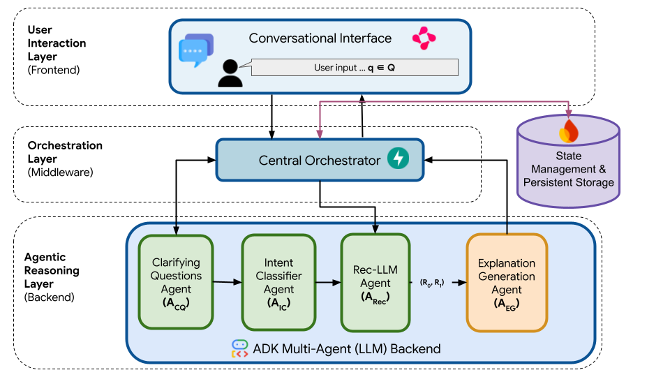

Traditional conversational travel recommender systems primarily optimize for user relevance and convenience, often reinforcing popular, overcrowded destinations and carbon-intensive travel choices. To address this, we present TRACE (Tourism Recommendation with Agentic Counterfactual Explanations), a multi-agent, LLM-based framework designed to promote sustainable tourism through interactive nudging. TRACE uses a modular orchestrator-worker architecture where specialized agents elicit latent sustainability preferences, construct structured user personas, and generate recommendations that balance relevance with environmental impact.
A key innovation is its use of agentic counterfactual explanations, which expose users to greener alternatives to foster reflection without coercion. User studies and semantic alignment analyses demonstrate that TRACE effectively supports sustainable decision-making while preserving recommendation quality and interactive responsiveness. TRACE is implemented on Google’s Agent Development Kit, with full code, Docker setup, prompts, and a publicly available demo video to ensure reproducibility.
Experience TRACE's multi-agent conversational travel recommendations and agentic counterfactual explanations directly in your browser.
Launch Live Demo/api/, Chainlit at /TRACE follows a modular, multi-agent orchestrator–worker design: specialized LLM agents coordinate to elicit preferences, construct personas, generate sustainability-aware recommendations, and offer concise counterfactual explanations.


TRACE uses a set of Jinja2 prompt templates, one per specialized agent, to govern each stage of the conversational pipeline — from clarifying questions to sustainability-aware recommendations and counterfactual explanations.
We thank the Google Developer Experts (GDE) Program for their generous support through Google Cloud Credits.
@inproceedings{banerjee2026trace, title = {TRACE: A Conversational Framework for Sustainable Tourism Recommendation with Agentic Counterfactual Explanations}, author = {Banerjee, Ashmi and Satish, Adithi and W{\"o}rndl, Wolfgang and Deldjoo, Yashar}, booktitle = {Proceedings of the 49th International ACM SIGIR Conference on Research and Development in Information Retrieval}, pages = {5129--5134}, year = {2026} }